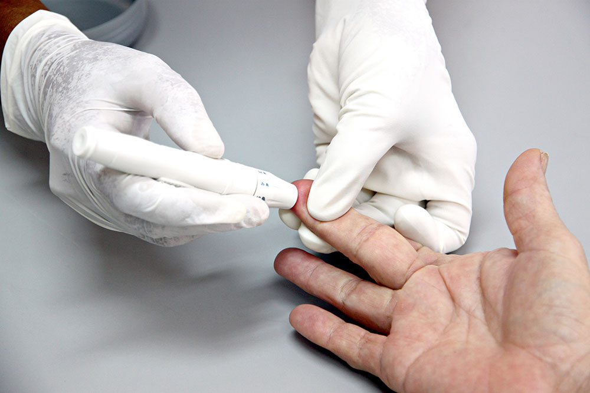
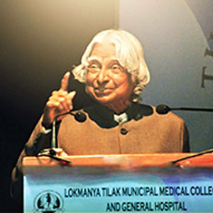
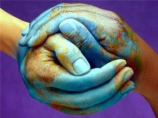

Why TIWS 2018?
-

Tropical Medicine
"Tropical Medicine" refers to the practice of medicine in the tropics. But does it refer to all medical practice that takes place within the Tropics, does it refer to the practice of medicine within resource poor settings or does it refer to the diagnosis and treatment of infectious and parasitic diseases found in a tropical environment? There is no standard definition of Tropical Medicine. These days, Tropical Medicine is often referred to as global/geographical health or international health and it encompasses a number of sub specialties such as refugee healthcare, travel medicine and expedition or remote/wilderness medicine.three major infections of concern in the tropics and often specifically targeted together by funding agencies are malaria, HIV and tuberculosis.
-

Guest Lectures From India's Top Teaching Institute
Lokmanya Tilak Municipal Medical College and General Hospital is one of the premier medical institutions of India. It stands today proudly serving humanity and is recognized for its yeoman's service, nationally and internationally; as one of the best Civic-Government run hospitals, providing quality care and medical education in the city of Mumbai. It is one of the most prestigious Trauma Care Centre of Asia. It was the first dedicated Trauma Service center in our country and is always in a constant 'state of alert' for disasters. It is the only tertiary care center available to Mumbai's suburban population, which now comprises 75 % of Mumbai's population. DHARAVI, Worlds largest slum, is right next door and the vast majority of the patient populations frequenting the hospital are extremely poor.
-

Cultural Exchange
Although The city has been known for its cosmopolitan nature, vibrancy and a lively spirit, Which is a result of people from different backgrounds, religions and regions contributing towards its development. The metropolis has a roadside fast food consisting of Maharashtrian Pav Bhaji, Vada pavs, Dabeli, Panipuri, Bhelpuri, etc. South Indian and Chinese food is also popular in the city. Other cuisines in the city are Lebanese, Korean, Thai, Italian, Mexican, Mughalai, Punjabi, Malvani and Continental. Festivals and celebrations are observed by residents of all communities and religions. Diwali, Holi, Christmas, Navratri, Good Friday, Eid, Dussera, Moharram, Ganesh Chaturthi, Durga Puja and Maha Shivratri are some of the festivals in the city. In 2004, Mumbai received two heritage conservation awards from the UNESCO. The Marine Drive is home to some of the finest buildings of the art deco style, which flourished in the 1920s and 1930s. Many Indo-Gothic monuments also line South Mumbai - Chhatrapati Shivaji Terminus; BMC building, Gateway of India are some of this style.
What are you waiting for?
Register
- TIWS 2018 -
Think, Testify, Triumph.
Secretariat
Conference Organizing Committee,
TIWS-2018,
TIWS Office,
Mumbai-400022